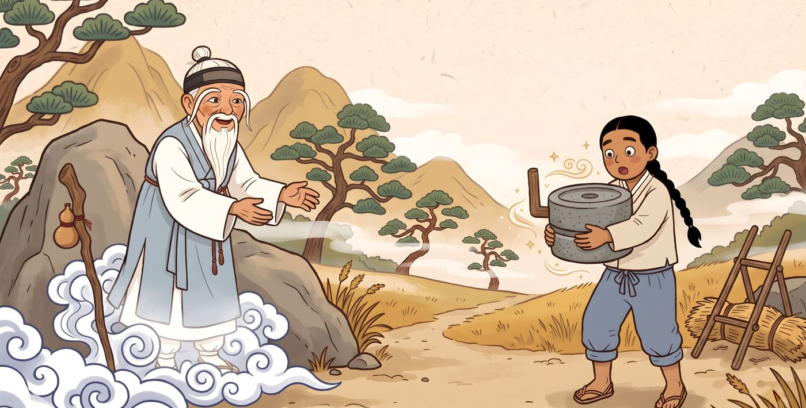
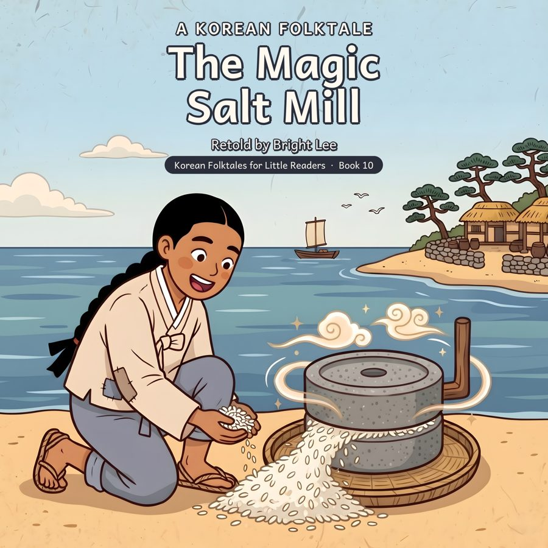

Journal · Korean Folktales for Little Readers · Book 10
Why is the sea salty? A Korean tale of a magic mill

"The Magic Salt Mill" is an old Korean tale that tells why the sea is salty. Stories like this are called origin tales. People in Norway, Japan, and other countries by the sea tell their own stories about a magic mill at the bottom of the ocean.
A maetdol is a hand mill made of two round, heavy stones. You put beans or grain into the hole on top and turn the wooden handle. The stones rub together, and flour or bean paste comes out between them. Korean families used a maetdol to grind soybeans for tofu and mung beans for crispy pancakes.
Long ago, salt was very precious. People made it by boiling seawater over a fire for a long time. Salt kept fish, vegetables, and kimchi from spoiling, so families needed it all year.
In Korean stories, a white-bearded old man who suddenly appears in the mountains is often a sansillyeong, a mountain spirit. He helps kind people.
Today, Korea still makes sea salt in wide, flat salt fields on its west coast. In late autumn, many families use lots of it to make kimchi together.
